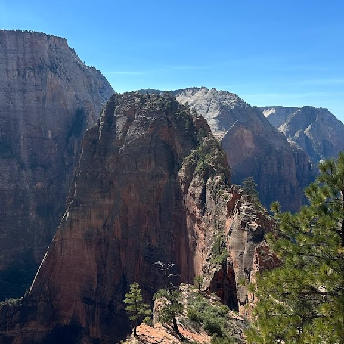
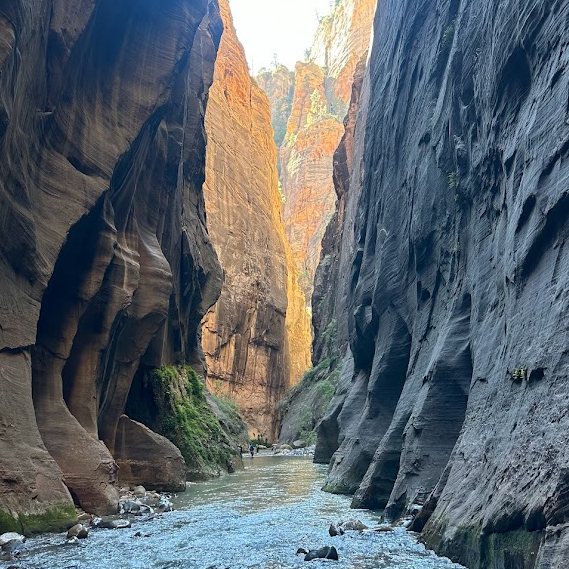
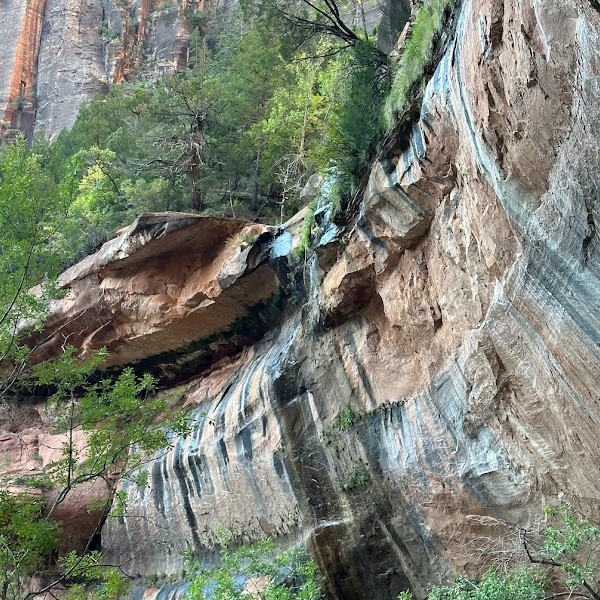

About Zion National Park
Zion National Park is Utah's first national park. People have walked the paths in Zion for thousands of years, and you can too! Experience a unique array of plants and animal, beautiful sights from mountain peaks, or traverse the famed Narrows!
History of Zion

Zion was first explored by Mormon pioneers, missionaries, and explorers. During this time (the 1850s), the area was harsh, wild, and scarcely explored, being inhabited solely by Sotuhern Paiute Indians. A man named Nephi Johnson, along with a Paiute guide was charged with the task of venturing into the main canyon to determine if the land could be farmed. Returning with good news, the settlers formed the town of Springdale by the early 1860s. Zion was named due to its prominence in the Mormon lexicon that refers to "spiritual sanctuary".
Angels Landing
One of Zion's most famous hikes, Angels Landing is a route along a steep, narrow ridge to the summit with drop-offs on either side. Not for the faint of heart, we advise children or anyone fearful of heights against hiking this trail. A permit is required to hike from Scout's Lookout to Angels Landing. However, the picturesque view from Angels Landing is worth the 1,488 foot elevation gain along the 2.7 mile trail.
The Narrows
Another must see at Zion National Park has two possible hikes: one from the Riverside Walk with the option to hike in and out of water for up to 9.4 miles, or you can follow the Virgin River from Chamberlain Ranch 15.5 miles through the entire narrows. Approximately 60% of the hike is spent walking through the water, but you can sometimes end up neck deep in the flowing water! We highly advise bringing your own or renting water shoes and walking sticks for your safety.
The Emerald Pools
Comprised of unpaved climbs between three naturally forming pools. Majestic sights can be seen all along the trails, including views of Lady Mountain, the Great White Throne, Red Arch Mountain and cliffs in all directions. All three trails to the pools are varying in difficulty, the lower being the easiest, the middle being moderately difficult, and the upper being the most strenuous to hike to.
